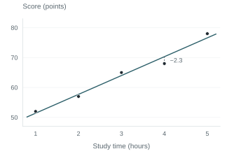

Linear regression
A line summarizes how an outcome changes with a predictor. Here is how least squares chooses that line, what its slope means, and what the line leaves unexplained.
The model
Suppose we record study time and a quiz score for each student. Simple linear regression models the score as an intercept, a contribution from study time, and an error:
Here, is the intercept and is the slope. If the error has mean zero at each study time, the line describes the mean score. An individual score can still fall above or below it.
“Linear” refers to the unknown coefficients. A model can include squared predictors and still be a linear model, as long as the coefficients enter linearly.
Choosing a line with least squares
For a candidate line, each residual is the observed score minus the fitted score: a vertical distance on the plot. Ordinary least squares (OLS) chooses the intercept and slope that minimize the sum of squared residuals:
Squaring prevents positive and negative residuals from canceling, and gives larger misses more weight. When the predictor values are not all identical, the best-fitting intercept and slope are unique.
A small example
Consider these five invented observations. They are teaching data, not evidence about how studying affects performance.
| Study time (hours) | Score (points) |
|---|---|
| 1 | 52 |
| 2 | 57 |
| 3 | 65 |
| 4 | 68 |
| 5 | 78 |
The least-squares fit is:

The slope is 6.3 points per hour: along this fitted line, one more hour corresponds to a 6.3-point increase in predicted score. This is an association in these data, not a causal effect.
At four hours, the predicted score is 45.1 + 6.3 × 4 = 70.3. The observed score is 68, so the residual is 68 − 70.3 = −2.3 points. The five squared residuals sum to 9.1.
The intercept, 45.1, is the line’s prediction at zero hours. Since the observed times range from one to five hours, that interpretation already involves extrapolation.
Reproduce the example in R
hours <- c(1, 2, 3, 4, 5)
score <- c(52, 57, 65, 68, 78)
fit <- lm(score ~ hours)
coef(fit)
# (Intercept) hours
# 45.1 6.3
sum(resid(fit)^2)
# 9.1What to check before trusting the fit
A fitted line alone does not tell us whether a linear mean is appropriate. Plot residuals against fitted values: curvature can suggest a missing nonlinear term, while a changing spread can suggest unequal error variances. Inspect unusual observations, too; squared loss can make them influential.
Computing OLS does not require normally distributed errors. The usual classical standard errors assume a correct linear mean and uncorrelated errors with a common variance. Normal errors give exact finite-sample t and F inference under those assumptions. Residual plots can reveal problems, but cannot establish that all assumptions hold.
For prediction, check performance on data not used to fit the model, and be cautious outside the observed predictor range.
The matrix and projection view
Stack the responses into a vector . For simple regression, the design matrix has a column of ones and a column of predictor values. The model becomes:
If has full column rank, the unique least-squares estimate is:
The fitted vector is the orthogonal projection of onto the column space of . Equivalently, the residual is perpendicular to every column of the design matrix:
This is the geometric reason least squares works: among all vectors the model can produce, the projection is the closest to the observed responses.